Appuyez.
Votre télé réagit.
Teek Taike transforme votre iPhone, iPad et votre Apple Watch en télécommande. Des touches qui ressemblent à de vraies touches, et vos apps sur grand écran d’un toucher. La télécommande est gratuite.
Disponible sur l’App Store pour iPhone, iPad et Apple Watch.
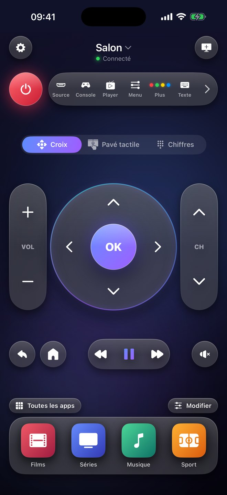
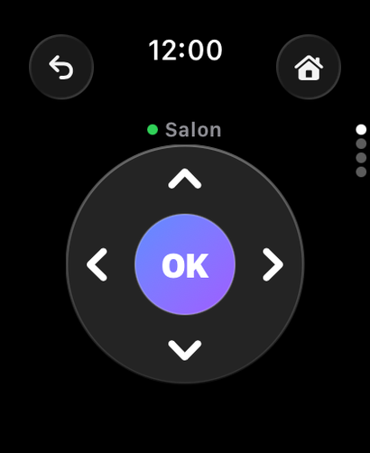
Comme une vraie télécommande.
En plus beau, et toujours sur vous. Tout ce qu’il faut pour la soirée sur un seul écran, sans défiler. Toute la télécommande est gratuite.
Des touches à toucher
Le volume et les chaînes sont de longues touches à bascule qui s’inclinent. La croix directionnelle s’enfonce et chaque touche clique.
Des apps d’un toucher
Lancez vos apps de streaming et toutes les autres apps de votre téléviseur. Vos favorites sont dans la barre du bas.
En cours
En haut de l’app s’affiche l’app qui tourne sur votre téléviseur. Vérifié avec parcimonie, seulement quand l’app est ouverte.
Croix, pavé tactile, chiffres
Un sélecteur juste au-dessus de la croix directionnelle : appuyez sur les flèches, glissez le doigt ou tapez un numéro de chaîne. Tout au même endroit, rien ne bouge.
Boutons de l’iPhone pour le volume
Tant que l’app est ouverte, les boutons de volume de l’iPhone règlent le téléviseur.
Siri et Raccourcis
« Volume plus avec Teek Taike », « Éteins la télé avec Teek Taike ». Aussi dans le Centre de contrôle et comme minuterie avec une automatisation.
Une connexion qui tient
À l’ouverture, l’app se connecte au téléviseur allumé. Un gardien Wi‑Fi remarque quand le réseau coupe un instant et se reconnecte tout seul.
La connexion d’un coup d’œil
Un point à côté du nom de votre téléviseur indique si tout est connecté. En cas de souci, touchez-le et l’app vous dit pourquoi.
Plusieurs téléphones à la maison
Chaque iPhone de la famille reçoit sa propre autorisation sur le téléviseur. Un « Autoriser » par téléphone, et les appareils ne se déconnectent plus entre eux. Un nouveau téléphone peut aussi être autorisé depuis un téléphone déjà connecté.
Jouer d’un toucher
Télé allumée, bonne entrée HDMI, volume adapté : un toucher sur « Jouer » fait tout. « Retour à la télé » revient aux programmes.
Temps de jeu pour les enfants
Réglez 45 minutes, une notification arrive 5 minutes avant, puis le téléviseur revient aux programmes ou s’éteint.
Français, anglais, allemand
L’app parle la langue de votre iPhone.
Voyez par vous-même.
Glissez pour parcourir →
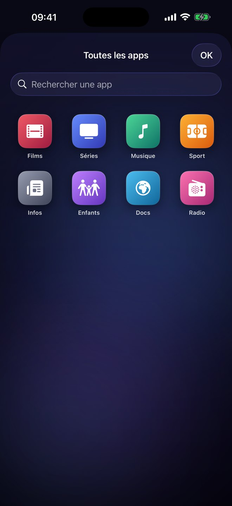
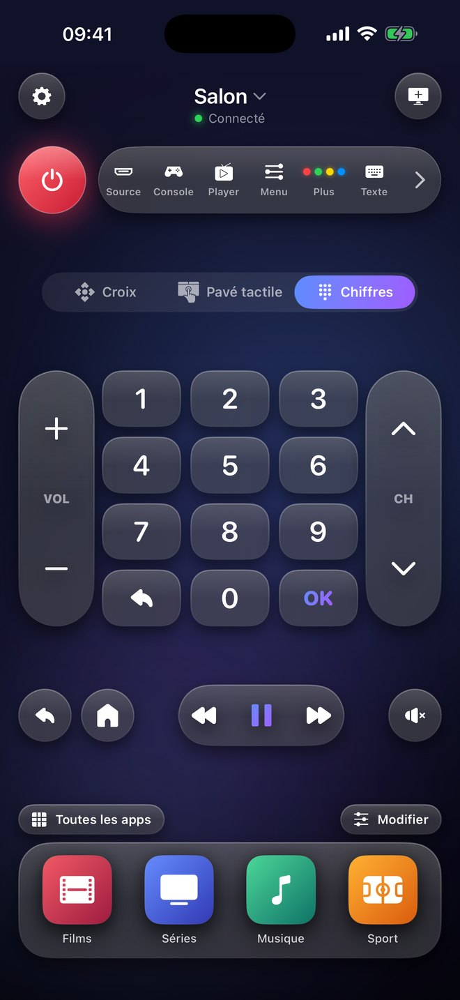
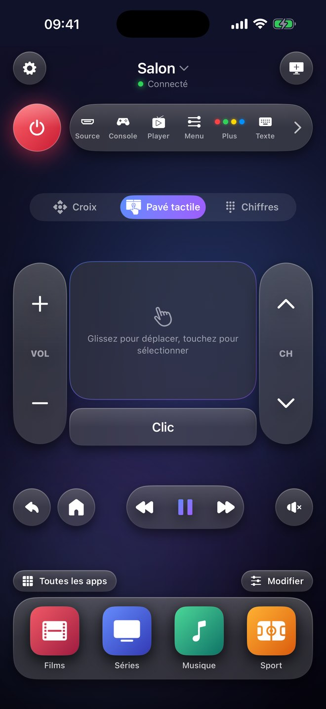
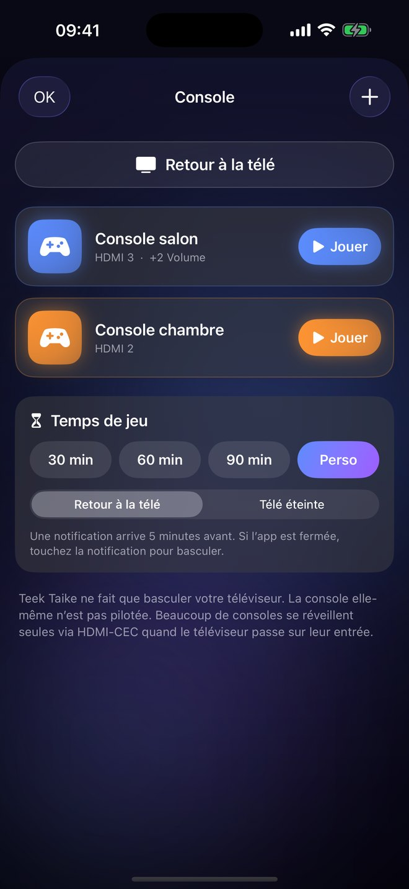
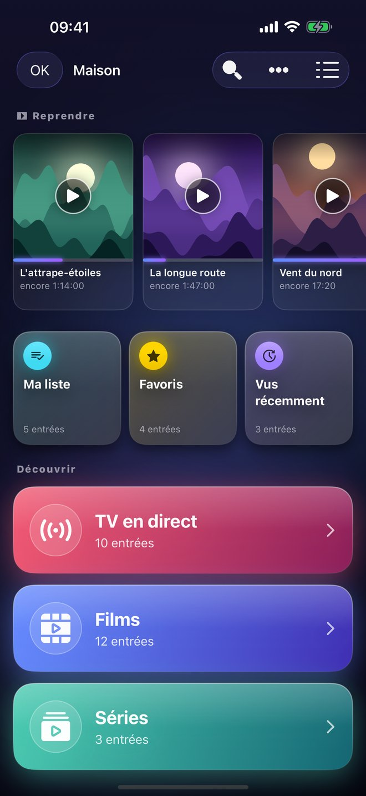
Tout d’un coup d’œil sur iPad.
À gauche, la télécommande avec une grande croix directionnelle et de longues touches pour le volume et les chaînes. À droite, vos apps favorites, les chiffres, les touches de couleur, le pavé tactile et un champ pour envoyer du texte. En paysage, tout tient sur un seul écran, sans défiler.
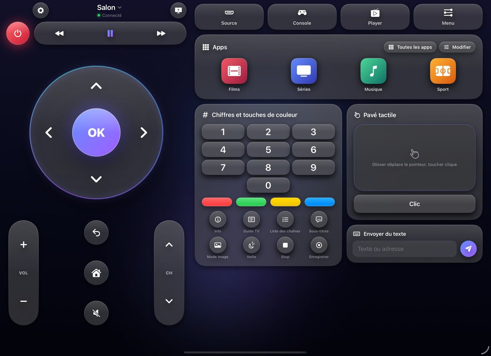
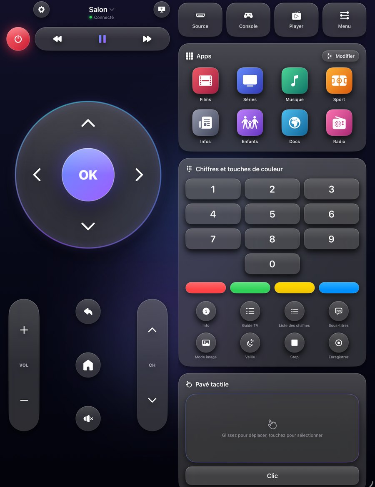
Un lecteur pour vos propres listes.
Ajoutez votre propre liste avec un lien M3U ou un accès avec serveur, identifiant et mot de passe. Direct, films et séries sont classés dans trois rubriques. Le lecteur fait partie de Teek Taike Pro.
Glissez pour parcourir →
Direct, films, séries
Catégories, favoris et récemment regardés, avec un seul champ de recherche pour tout. Nommez, colorez et triez vos dossiers vous-même.
Liste des chaînes comme sur la télé
Les chaînes en direct les unes sous les autres, comme sur votre téléviseur, avec le programme en cours. Changez de chaîne d’un glissement.
Guide TV avec menu des dossiers
Le programme de toutes les chaînes en grille. Choisissez le dossier en haut, et si votre fournisseur a des archives, revoyez ce que vous avez manqué.
Dossiers d’un toucher
Épinglez vos dossiers les plus importants en haut. Vos chaînes sont toujours à un toucher.
Votre ordre des chaînes
Faites glisser les chaînes dans l’ordre qui vous convient. Les numéros suivent votre liste, y compris en zappant dans le lecteur.
Réunir des listes
Plusieurs de vos listes peuvent former une seule vue si vous le souhaitez. Chacune reste intacte, et vous défaites le lien à tout moment.
Ajouter une liste facilement
Inutile de taper de longues adresses sur le téléphone : scannez un code QR, touchez un lien ou envoyez la liste depuis un ordinateur sur votre Wi‑Fi.
Envoyer à la télé
Votre Samsung lit le flux lui-même, l’iPhone devient une télécommande avec pavé tactile. Tout reste sur votre Wi‑Fi à la maison.
Multi-écran
Deux ou quatre chaînes à la fois, le son vient de celle que vous touchez. Aussi sur la télé avec la recopie de l’écran.
Ma liste et Reprendre
Gardez films et séries pour plus tard. Une rangée montre où vous vous êtes arrêté, et à la fin d’un épisode le suivant démarre après un compte à rebours.
Les notes d’un coup d’œil
La note s’affiche directement sur l’affiche. Triez par note ou affichez seulement les titres à partir de 7 ★.
Fiches films et séries avec bande-annonce
Grande image ou bande-annonce, résumé, note et distribution, si votre fournisseur les fournit. Puis lecture, ou reprise là où vous étiez.
Comme une app de streaming
Double toucher pour avancer, glisser pour changer de chaîne, luminosité et volume sur les bords. Avec AirPlay et image dans l’image.
CarPlay
Écoutez vos chaînes et vos films en voiture, avec la liste des chaînes et suivant/précédent sur l’écran de la voiture. En voiture, seulement le son, pas d’image.
Minuterie de mise en veille
Après 15, 30, 45 ou 60 minutes, ou à la fin de l’épisode, le son baisse et le lecteur s’arrête. La position est mémorisée.
Verrouillage d’écran et contrôle parental
Verrouillez l’écran du lecteur, ainsi aucun toucher involontaire n’arrête le film. Les catégories pour adultes sont verrouillées, vos dossiers se protègent avec un code.
Vide et propre
Teek Taike ne contient ni chaînes, ni films, ni séries, ni listes et ne recommande aucun fournisseur. Vous ne lisez que ce que vous avez obtenu légalement.
Télécommande gratuite. Pro en un seul achat.
Tout ce qu’une télécommande doit savoir faire est gratuit. Pour regarder vos propres listes, Teek Taike Pro débloque le lecteur. Achetez une fois et gardez-le, sans abonnement.
Télécommande
- Toutes les touches, croix et chiffres
- Lancer les apps et « En cours »
- Pavé tactile et clavier
- Siri, Raccourcis, Centre de contrôle
- iPad et Apple Watch
- Jouer et temps de jeu
- Plusieurs téléphones à la maison
Teek Taike Pro
- Tout ce qu’offre la télécommande gratuite
- Lecteur pour vos propres listes (M3U ou accès avec identifiant)
- Envoyer à la télé
- Multi-écran avec 2 ou 4 chaînes
- Ma liste, Reprendre, épisode suivant
- Notes, bandes-annonces, guide TV
- Verrouillage d’écran et contrôle parental
Le paiement passe par l’App Store avec votre compte Apple. L’app affiche le prix avant l’achat. Sur vos autres appareils, touchez simplement « Restaurer les achats ».
À votre poignet.
Avec l’Apple Watch, l’iPhone reste dans la poche. De grandes touches faciles à viser, et la couronne règle le volume. Un glissement mène aux chaînes, à la lecture et à vos apps.
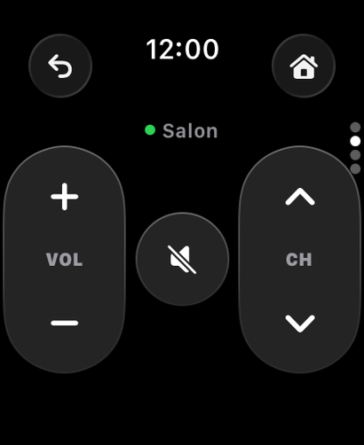
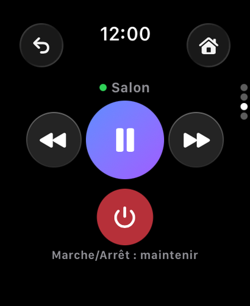
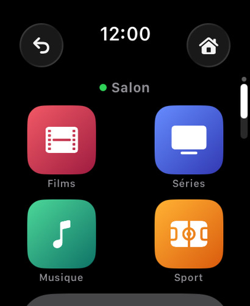
Quels téléviseurs ?
Le téléviseur et l’iPhone doivent être sur le même Wi‑Fi. À la première connexion, le téléviseur demande une fois « Autoriser ? », ensuite tout fonctionne tout seul.
Samsung Smart TV
Avec Tizen, à partir des modèles 2016 environ. Testé avec un Samsung QLED de 2025. Pour l’allumer via le Wi‑Fi, activez « Allumer avec un mobile » (Paramètres › Général › Réseau › Paramètres experts).
D’autres marques
D’autres téléviseurs arriveront par une mise à jour une fois testés sur de vrais appareils.
Consoles de jeu via HDMI
Teek Taike bascule votre Samsung sur l’entrée HDMI de votre console. La console elle-même n’est pas pilotée.
Les apps appartiennent à leurs éditeurs
Les apps fonctionnent sur votre téléviseur. Teek Taike ne fait que les lancer et n’a aucun lien avec les fabricants ou les éditeurs.
Bon à savoir.
Combien coûte Pro ?
La télécommande est gratuite. Teek Taike Pro est un achat unique dans l’App Store, sans abonnement ni frais cachés. L’app affiche le prix exact dans votre devise avant l’achat.
Des chaînes sont-elles incluses ?
Non. Teek Taike ne contient ni chaînes, ni films, ni séries, ni listes et ne recommande aucun fournisseur. Le lecteur ne lit que vos propres listes obtenues légalement, avec un lien M3U ou un accès avec identifiant.
Plusieurs téléphones dans le foyer ?
Bien sûr. Chaque iPhone se présente au téléviseur sous son propre nom, et le téléviseur demande « Autoriser ? » une fois par téléphone. Ensuite, tout le monde pilote le même téléviseur sans se déconnecter. Pro fonctionne sur tous les appareils de votre compte Apple.
Quels téléviseurs sont compatibles ?
Les Samsung Smart TV avec Tizen, à partir des modèles 2016 environ. Le téléviseur et l’iPhone doivent être sur le même Wi‑Fi. D’autres marques arriveront par une mise à jour une fois testées sur de vrais appareils.
Comment fonctionne Envoyer à la télé ?
Touchez Envoyer dans le lecteur, et votre Samsung lit le flux lui-même. L’iPhone devient la télécommande. Si votre fournisseur n’autorise qu’une connexion, l’iPhone récupère le flux et le transmet au téléviseur sur votre Wi‑Fi. L’app reste ouverte pour cela.
Où sont mes identifiants ?
Uniquement sur votre iPhone. Le mot de passe de votre liste est conservé dans le trousseau d’iOS. Pas de compte chez nous, pas de publicité, pas de suivi.
Vos données restent chez vous.
Pas de compte, pas de publicité, pas d’analyse, pas de suivi. L’app communique directement avec votre téléviseur sur le Wi‑Fi.
Ce qui est enregistré
Uniquement sur votre iPhone : le nom et l’adresse de vos téléviseurs et l’autorisation accordée avec « Autoriser ». Supprimez le téléviseur ou l’app, et tout est effacé.
Vos identifiants
Le lien, le serveur et l’identifiant de vos listes restent sur votre iPhone, le mot de passe est dans le trousseau. La lecture passe directement entre votre iPhone et votre fournisseur, pas par nous.
L’envoi reste à la maison
Quand vous envoyez à la télé, tout passe par votre Wi‑Fi. Si l’iPhone doit transmettre le flux, seul votre téléviseur peut le récupérer, via une adresse aléatoire qui disparaît après la lecture.
Achat via Apple
Vous achetez Pro dans l’App Store. Apple gère le paiement, nous ne voyons ni votre nom ni vos données de paiement.
Connexions à Internet
Pour les icônes, l’app interroge la recherche publique de l’App Store d’Apple. Les bandes-annonces ne se chargent qu’à l’ouverture d’une fiche film ou série.
Aucun contenu inclus
Teek Taike n’apporte ni chaînes ni listes. Vous choisissez vous-même la liste que vous ajoutez.
Appuyez.
Disponible sur l’App Store pour iPhone, iPad et Apple Watch.